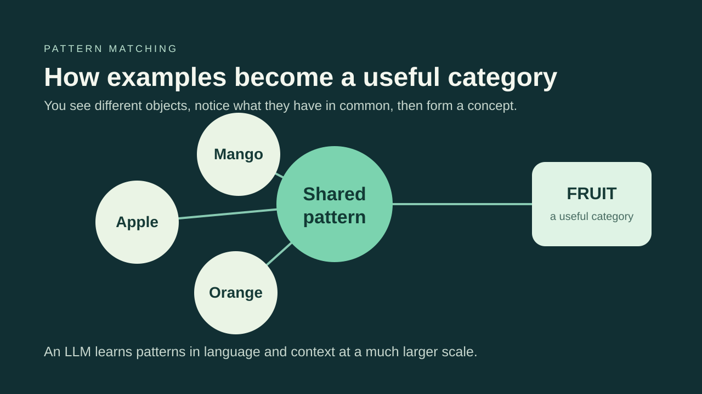
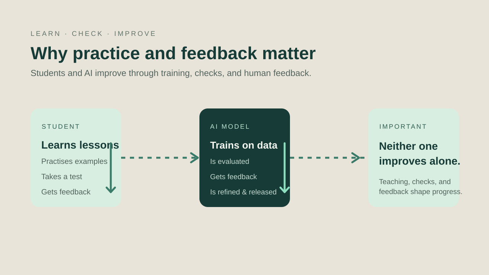
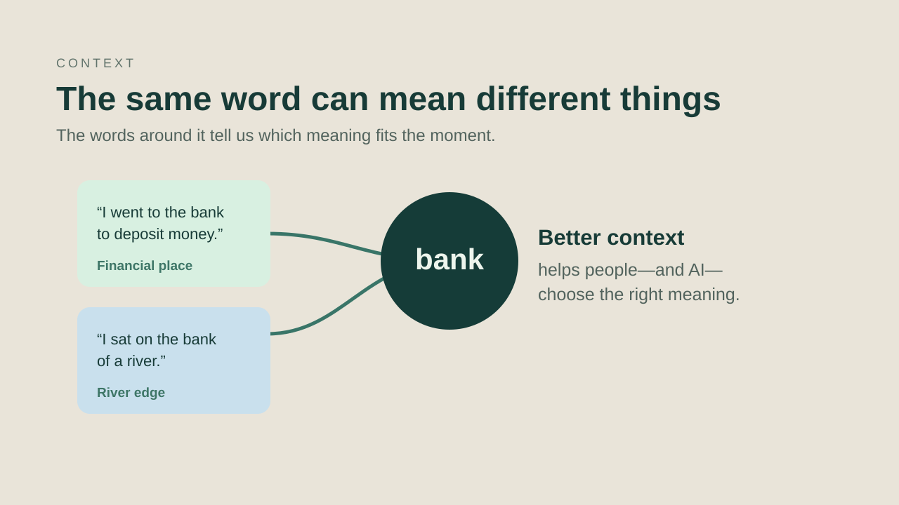
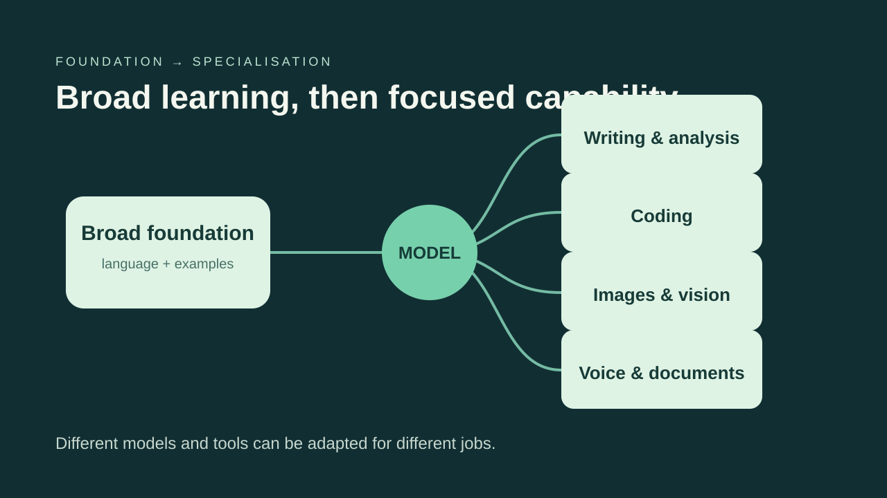

01 · Start with the hype
You know the names. Now learn the idea behind them.
Before jumping into technical words, ask one simple question: how did you learn anything new? You did not begin by memorising perfect answers. You saw examples, tried things, made mistakes, received feedback, and gradually built better judgement.
That is the useful comparison. AI is not a person and does not have human experience or emotions. But people built learning systems that can find patterns in a huge number of examples, then use those patterns to produce a helpful next word, answer, or action.
02 · A for Apple
Learning begins when language meets real life.
Think about school. “A for Apple” worked because you did not only hear a sound. You saw an apple, perhaps ate one at home, or recognised it at a market. The word, object, and experience became connected.
Language models are trained on text, code, and other examples. They do not live the experience of eating an apple, but they learn that words such as apple, orange, and mango often appear in similar situations. Those relationships become patterns they can use.

03 · Practice and feedback
A better result comes from learning, checking, and improving.
A student is taught, tested, corrected, and moved forward when they meet the standard. AI development has a related cycle: people train a model, test it on tasks, study where it falls short, then refine it with better data, feedback, and safeguards before releasing a stronger version.
The difference matters: a model does not automatically grow after it is released. People must evaluate, retrain, and update it. So when an AI response is weak, the cause may be poor training data, missing context, unclear instructions, or a task outside the system’s intended capability.

03A · The feedback loop
Training is closer to school than to a magic download.
A student learns from a teacher, practises, takes an exam, receives a mark, and moves forward after meeting a standard. AI systems follow a related improvement cycle: people train a model on examples, test it against defined tasks, study weak results, and refine it before publishing a newer version.
The comparison is useful because it shows where responsibility sits. An AI model does not decide to move itself to the next grade. People select the learning material, create tests, check safety and quality, and choose when a model is ready for a release.
03B · Language creates shared understanding
A word becomes useful when people share its context.
Language is more than the words we speak. It is how people share instructions, knowledge, and skills. If a teacher and student do not share enough language and context, it is difficult to teach a task. The same is true when we ask AI to help.
For example, a food such as sushi or butter chicken may be familiar in one community and unfamiliar in another. The food can still exist, but the word carries different expectations. This is why culture, experience, and surrounding details change how a message is understood.
04 · Context changes everything
The same word can lead to two different meanings.
Read these two lines: “I went to the bank to deposit money.” “I sat on the bank of a river.” You instantly know that the word bank means something different. The nearby words provide context.
That is why good prompting is not about finding a magic command. It is about sharing the goal, the audience, the important details, and any limits. The clearer the context, the more likely an AI system is to select a useful response.

05 · What LLM means
A Large Language Model is a pattern learner for language and context.
Language means it works with words, sentences, code, instructions, and the context around them. Large refers to the scale of its internal model and the volume of material it trained on. It is not a claim that the system understands everything or never makes a mistake.
Many familiar tools are powered by language models or combine them with other specialist systems. ChatGPT, Claude, and Gemini can help with writing, analysis, reasoning, and coding. Other models may be adapted especially for coding, images, voice, documents, or other jobs.
05A · From foundation to a major
Broad knowledge comes first; focused capability comes next.
Think of a student who first learns the essentials: language, numbers, the environment around them, and how to communicate. Later, they choose a deeper focus such as music, sport, mathematics, engineering, or history. AI can be built in a similar broad-to-focused way.
A foundation model learns broad patterns from a large collection of material. It can then be adapted or connected to specialist tools for a specific job. That is why a coding model can be especially useful for software work, while other systems are designed for images, voice, or document analysis.

06 · Watch the explainer
See the learning analogy in action
This short visual explainer brings together the same ideas: the AI hype, examples, feedback, patterns, context, and specialisation.
07 · The takeaway
AI is not magic. It is learned patterns, feedback, context, and focus—at scale.
Use AI as a powerful assistant, not as an unquestioned authority. Give it the context that a helpful human teammate would need. Check important results. And choose the right system for the job.
The better you understand how AI learns and where its limits are, the better you can use its power in everyday work.